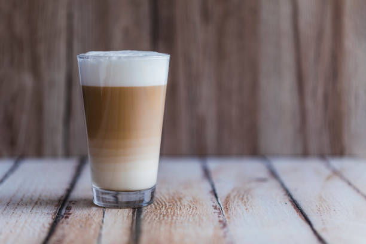

Latte
Sokan tévesen gondolják, hogy a kapucsínó olasz eredetű, holott valójában a 17-18. század fordulóján Bécs kávéházaiban jelent meg "Kapuziner" néven, a kapucinus szerzetesek barna palástja után elnevezve. Az eredeti receptje cukorral, fűszerekkel, tejszínnel és tojással készült, tejszínhabbal a tetején. Bár mai formája már nem így készül, ez a történeti változat meglepően ígéretesen hangzik a modern ízlés számára is.
A cappuccino egy eszpresszó alapú kávéital, amelyet hagyományosan párolt tejjel készítenek, amely tejhabot is tartalmaz. Az ital variációi közé tartozik a tej helyett tejszín használata, nem tejpótló tej helyettesítése, valamint kakaóporral vagy fahéjjal történő ízesítés.
- Alapja: 1 adag eszpresszó.
- Arányok: sok meleg tej (kb. 2/3), a tetején vékony réteg finom tejhab.
- Tálalás: nagyobb csészében vagy üvegpohárban (200–300 ml).
- Ízvilág: kávés, de enyhébb, lágyabb az erős tejes karakter miatt.
- Variációk: gyakran ízesítik szirupokkal (vanília, karamell, mogyoró), és latte art díszíti a tetejét.
- Fogyasztás: bármely napszakban népszerű, főleg azoknak, akik a gyengébb, tejesebb kávékat kedvelik.